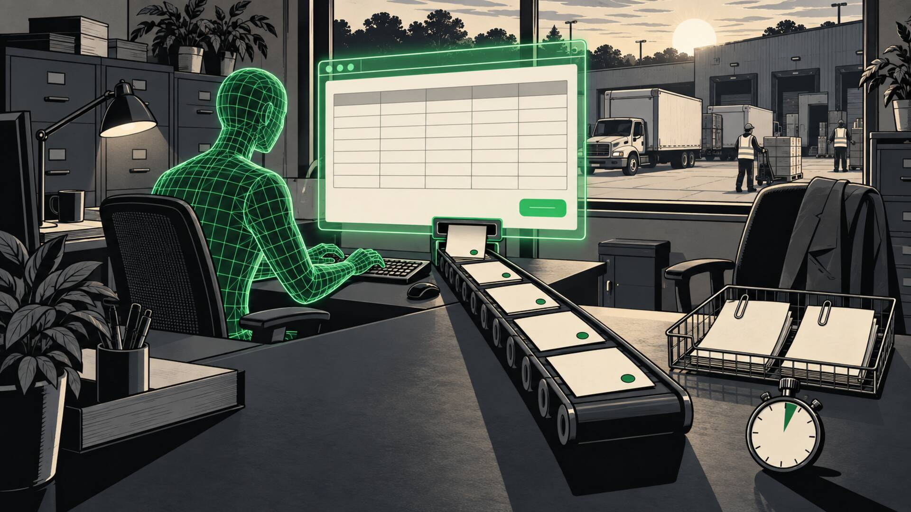

05 · Closed out, automatically
Then it closes out in your VMS. Agentically.
The same digital worker reads the agency invoice, reconciles it against the shifts that were actually worked, and posts the verified result into the VMS you already run. Clean invoices pass straight through. Disputed lines wait, with their evidence attached.